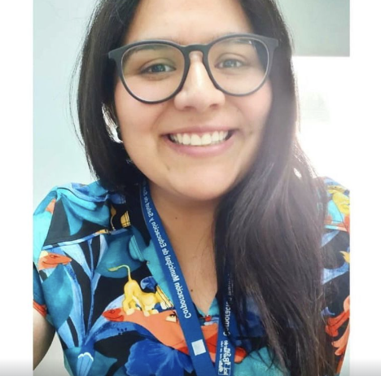

Curriculum Vitae Gabriela Axt

Resumen
Me caracterizo por ser una profesional proactiva, siempre en busca de la
mejora continua, fomentando la comunicacion entre áreas.
Disponible a aprender de la experiencia del resto de los profesionales, para
complementar y aumentar la eficiencia del trabajo en equipo en pro del paciente y sus cuidados.
Antecedentes Personales
- Nombre: Gabriela Axt Ocaña
- Edad:32 años
- Estado civil: Casada
- Contacto telefonico: +56945760113
- Mi Linkedin
Antecedentes Académicos
- Cursando programa de Desarrollo Full Stack JavaScript, Desafio Latam.
- Diplomado de Infecciones asociadas a la atencion en salud, IPP Chile.
- Licenciada en Enfermería, Universidad de las Américas.
- Enseñanza Media Completa, Colegio San Pedro.
Experiencias Laborales
- Enfermera Jefe Sector transversal, CESFAM Confraternidad. Enero 2020 - Actualidad.
- Enfermera de Curaciones avanzadas, CESFAM Confraternidad. Abril 2019 - Diciembre 2019
- Enfermera Docente, Hospital San Jose. Octubre 2018 - Marzo 2019
- Enfermera Vacunatorio PNI, Vacunatorio Biosalud. Marzo 2018 - Agosto 2018
Mis Proyectos en: Portafolio